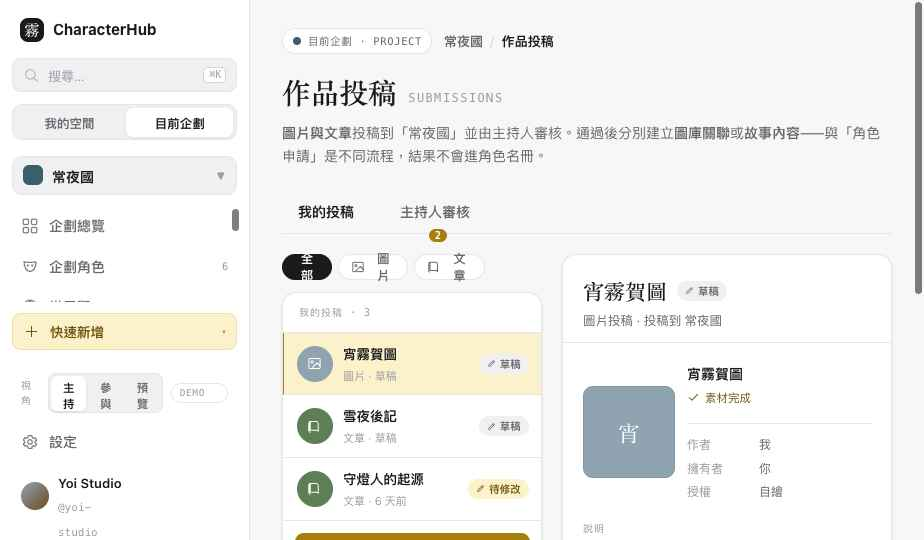
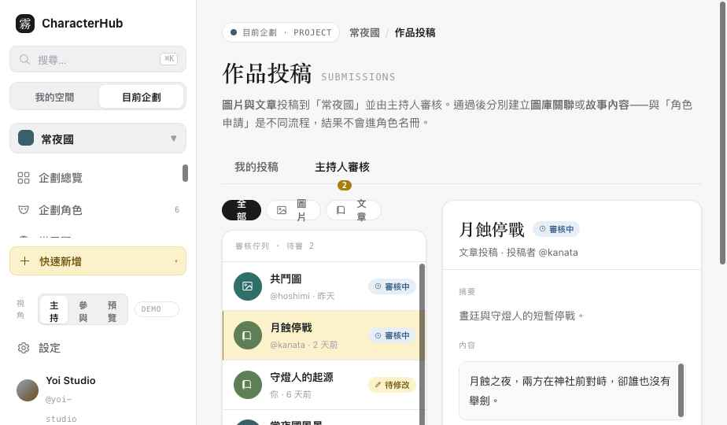

CharacterHub · Slice 5D · Content Submission
Slice 5D 驗收
圖片與文章作品投稿與審核。與 CharacterApplication 資料與核准結果完全分開——圖片通過建立 AssetLink、文章通過建立／更新 Story 內容，皆不進角色名冊。共用審核中心外殼與 Review Card，但 payload 與目的地分型。
content-submissions.html
asset / text
≠ CharacterApplication
Demo interaction only
01
可點擊頁面
Clickable
同一審核中心兩個分頁：我的投稿（投稿者）與主持人審核（依權限）。頂部類型分頁切換 圖片／文章。用側欄「視角」切換 主持／參與／預覽。

我的投稿 · 圖片詳情（作者／擁有者／授權）

主持人審核 · 文章內容 + 發布目標
02
與 CharacterApplication 分離
Separate data & result
| 面向 | CharacterApplication | ContentSubmission |
|---|
| 資料 | 申請角色加入（fieldValues / templateVersionId） | 圖片或文章作品（typed payload） |
| 通過結果 | 建立 ProjectCharacterLink（角色名冊） | 建立 AssetLink 或 Story 內容（不進名冊） |
| 頁面 | submissions.html · 角色申請 | content-submissions.html · 作品投稿 |
| 共用 | 審核中心外殼、Review Card、狀態、審核紀錄、要求修改／拒絕、權限判斷——但核准結果分開 |
03
圖片投稿 · Asset / AssetLink
Image
使用既有 Asset，payload 為 AssetSubmissionPayload（assetId / proposedLinks / caption / visibility / attributionConfirmation）。proposedLinks 可指向 圖庫／角色／世界觀／故事／事件／關係相簿。
- 通過：Submission → approved ＋建立核准的 AssetLink ＋寫入 destinationType／destinationId。
- 不轉移 Asset 擁有權；主持人不能因核准而永久刪除投稿者 Asset；Creator／Uploader／Owner 分離（詳情顯示 作者／擁有者／授權）。
- Asset 必須 ready——processing／failed 無法提交或通過（顯示處理中警告）。
- Asset 被封存或改私密 → 投稿顯示來源失效。
04
文章投稿 · Story 目的地
Text
typed TextSubmissionPayload（title / summary? / content / destinationIntent / targetId? / visibility），不與圖片 payload 混用。destinationIntent：create_story／create_chapter／append_to_chapter／create_story_event。
- 通過：建立 Story／Chapter／StoryEvent 或附加到既有 Chapter ＋寫入 destinationType／destinationId。
- 目標（章節／故事）不存在 → 目的地失效警告，不可通過。
- 投稿者 作者署名保留，內容進入企劃故事後仍標示作者。
05
審核者發布設定 vs 投稿原稿
Publish settings ≠ original
右側預覽依類型不同：圖片顯示「將建立哪些 AssetLink／出現在哪／作者授權」；文章顯示「將建立或更新哪個 Story／Chapter／Event／標題內容可見性／作者署名」。不用模糊的「通過後加入名冊」。
主持人可調整發布目的地／分類／可見性——明確標為「發布設定（審核者）」並保留 Audit，不無痕重寫投稿者原稿。要求修改／拒絕必填原因。
06
Action Permission + 目的地權限
Two-layer
投稿動作走 submission:create / view_own / update_own / submit / withdraw / review / request_changes / approve / reject（沿用 5B 的 Permission Resolution）。核准目的地另外檢查：assetLink:create（圖片）、story:create / chapter:create／update / storyEvent:create（文章）。有 submission:approve 不代表能寫入所有目的地。
07
公開與 Ownership
Visibility chain
核准內容公開仍需：Submission approved 且 Destination visible 且 Source Asset／Entity visible 且 Project／Published Page visible。圖片 Creator、文章作者與投稿者資訊不被默默移除；圖片投稿不改 Asset Owner；文章進入企劃內容後清楚標示 作者／投稿者／企劃審核者。
08
狀態與錯誤（17 情境）
States
沒有投稿
圖片草稿
文章草稿
Submitted
Changes Requested
圖片通過→圖庫
文章通過→章節
Rejected
Withdrawn
Asset 處理中
Asset 封存／失效
目的地失效
通過交易失敗
Already Processed
另分頁已審核
無審核權限
部分目的地無權限
09
Responsive / A11y
RWD · A11y
桌機三欄（投稿清單＋內容預覽＋目的地與審核紀錄）；窄寬改類型分頁、單欄內容預覽、審核區 Accordion、固定底部審核操作；圖片保持比例、長文章可讀不被操作列遮住。A11y：投稿類型有文字（非只圖示）、錯誤摘要 + focus 第一個錯誤、狀態 aria-live、Dialog focus trap、圖片 Alt、退修／拒絕原因可朗讀、清單鍵盤可操作。
10
Contract / API Status
Status
DOMAIN CONTRACT PARTIAL · ContentSubmission
id / projectId / submitterUserId / submissionType / status / payload / destinationType? / destinationId? / submittedAt? / reviewedAt? / reviewedBy? / revision。payload 分型 AssetSubmissionPayload／TextSubmissionPayload。本地已有 Asset、Story 等概念，但 ContentSubmission 結構為前端 UI 依據。
API STATUS · NOT IMPLEMENTED
正式 ContentSubmission API、核准 transaction、目的地寫入（AssetLink／Story）與 Repository 皆未實作。本頁所有寫入皆為 Demo。
11
Demo-only / Open Issues
Demo · 未完成
demo建立草稿、儲存、提交、撤回、刪除草稿、重新提交
demo通過／要求修改／拒絕、原子通過（成功／失敗）、發布設定調整
- 投稿建立 wizard（選類型→選/建內容→選目標→說明→預覽→提交）目前以類型挑選 + 既有草稿呈現，逐步精靈未完整串接。
- 逐筆 proposedLink 編輯（增刪關聯目標）尚未做成可編輯 UI，目前以 fixture 呈現。
- 「另一分頁已審核」「Already Processed」以 Demo／provenance（destinationType 已寫）表示，未做實際版本衝突回復。
- 部分目的地無權限的逐目的地灰化／提示為說明層級，未做完整 gating UI。
- 真人測試未做：圖片 vs 文章流程切換、目的地選擇的可理解性需任務驗證。
12
交接註記（驗收後補）
Handoff for backend
① 多目的地結果 · ContentSubmissionDestination[]
單一 destinationType/Id 只能表示主要去向。正式記錄 ContentSubmissionDestination（submissionId / destinationType / destinationId / resultType / resultId / status / sourceItemKey?）或等價 approvalResults[]。每筆核准建立的 AssetLink／Story／Chapter／StoryEvent 各有獨立結果紀錄。
② Submission Revision · 固定版本審核
ContentSubmissionRevision（submissionId / revisionNumber / payloadSnapshot / submittedAt / submittedBy）。主持人審核的是固定 revision 的 snapshot，不是仍可變動的草稿 payload。
③ 投稿原稿 vs 發布設定
主持人調整的目的地／分類／可見性／Caption 保存為獨立 Publish Plan／Review Decision，不覆寫投稿者原稿。需改原稿走「要求修改」，不可無痕編輯。
④ Provenance · sourceSubmissionId
核准建立的 AssetLink／Story／Chapter／StoryEvent 保存 sourceSubmissionId 或等價 attribution。用於 Idempotency／Audit／作者署名／回查原投稿／防重複建立。
⑤ proposedLinks 逐筆核准
建議審核者可對每個 proposedLink 選 approved／rejected／modified；最終 transaction 只建立核准的 destinations，仍為原子；每個 destination 保存自己的審核結果。本輪 UI 為整批呈現，逐筆核准列為待本地決策。
⑥ append_to_chapter 不無條件拼接
不可直接把投稿正文接到既有章節。第一版建立新內容區塊／待編輯草稿段落／章節附加內容，並保存插入位置、原始投稿、實際寫入結果與作者署名。
⑦ Approved 後生命週期
Draft 可刪；Submitted／Changes Requested 可撤回；Approved 不可直接改 Withdrawn，需走獨立的解除發布／移除流程；Rejected／Withdrawn／Approved 均保留歷史。
⑧ Asset Revocation Gate
即使 Submission 已核准，Asset 被封存／改私密／撤銷授權時，公開顯示需立即停止；內部引用顯示來源失效與修復入口，不可續用舊公開素材。